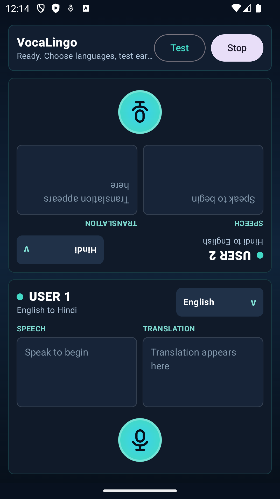

Continuous Chunks
Speech is segmented by STT finals, punctuation, silence timing, stable partials, and max duration.
Native Android + OCI gateway + Google Cloud AI
VocaLingo captures speech, detects phrase boundaries, streams audio to a secure backend, translates stable chunks, and routes synthesized speech to the other user's ear channel.
Android direct install package. Allow install from browser if prompted.

Speech is segmented by STT finals, punctuation, silence timing, stable partials, and max duration.
Translated audio is queued and panned through AudioTrack so the listener hears the opposite speaker.
Google Cloud credentials remain on the backend; no service credentials are shipped in the APK.
System architecture
Technical details
The implementation prioritizes production-shaped boundaries: native audio capture on Android, a backend session gateway, chunked interpretation, and observable cloud service calls.
Kotlin, Jetpack Compose, Coroutines/Flow, AudioRecord at 16 kHz PCM mono, local VAD, and AudioTrack stereo playback.
Node.js WebSocket service on OCI with session lifecycle controls, validation, rate limits, chunking, and latency metrics.
Speech-to-Text streaming, Cloud Translation, and Cloud Text-to-Speech compose the core STT -> translation -> TTS path.
Android connects to wss://vocalingo.duckdns.org/ws through HTTPS/WSS proxying, with debug cleartext isolated to emulator builds.